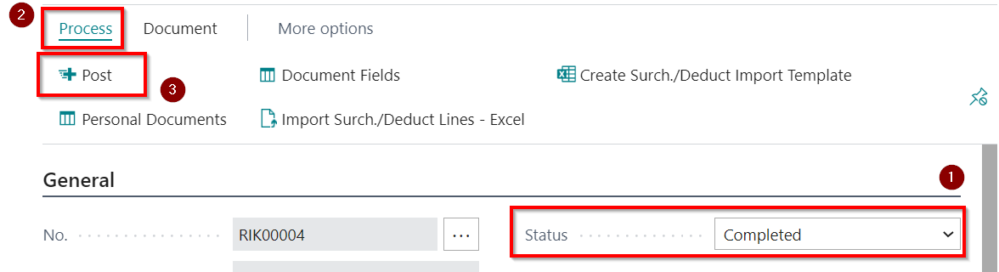

Disclaimer
Please note that data provided in the steps of user scenarios are sample data and differ from real life data of your company. This user scenario does not include setup, that is required by Latvian Payroll Advanced standard. Sample data that are displayed in brackets are intended to provide an indication, what information is expected to be completed at a certain step. In terms of real life scenarios, please ensure that your master data are configured in the way as it is recommended by the Setup of this App.
Walkthrough: Import Configuration Package
The basic settings and codes required for use of Latvian Payroll Advanced are created by applying the configuration package.
Click on the button Search for Page or Report..
Type Configuration Packages and select it from a list:
Import Configuration Package by pressing Import Package in the Ribbon
 -
-  and selecting the file from your file storage
and selecting the file from your file storage  .
.
Select LVI.LVI.PAYROLL_AD package from list
and press Process and Apply Package .
Configuration package ensures the following information:
- Countries/Regions
- Payroll-related chart of accounts
- General ledger setup related to salaries
- General journal templates and batches
- Units of measures
- LV postal codes
- Bank account card for salary payments
- Bank posting group
- Number series and their lines
- SWIFT codes
- Causes for absence codes
- Employee statistics groups
- Employee posting groups
- References to articles of the Labor Law
- Human Resources setup
- Payroll setup
- Payroll components and setup
- Payroll bases and setup
- Personnel setup
- Social statuses and status codes
- Reduced interest rates for absence
- Calendars and calendar changes for current year.
- Posting setup for salary payments
- Posting setup for salary components
- PFPIS income and easing types
- Vacation period setup
- Additional vacation day setup*
- Statistic report Work-2 codes
- Sick List import setup
Walkthrough: Recruit employees and setup the company for the payroll
About this walkthrough: This walkthrough demonstrates the process for hiring the new employees.
Roles: These usage scenarios are prepared based on role center LV Payroll. However, no specific user role is mandatory, but it is recommend to use role LV Payroll for the convenience of the user. To switch to the role LV Payroll, please, click on settings button , select My settings from the list and change the Role to LV Payroll .
Story: You are Elizabeth Brooks, a chief accountant of the sales company. Your responsibilities also include payroll. The company just started and your are the company's first employee with employment day 01.08.2020. It is also planned to recruit a sales manager James Smith with a starting date of 15.08.2020. Your task is to create employee cards, enter company's departments and positions and recruit the employees.
Pre-requisites: No specific prerequisites are required
Steps:
- In order to recruit the employees, departments and position need to be registered. Let's start with departments. In the role center's navigation bar press Departments
- Press New to create a list of departments.
Enter the following departments - 00-00, Administration and 10-00, Financial department and 20-00, Sales. Make sure that the Date Created for all department lines are 01.01.2020.
Let's create also the positions. In the role center's actions pane tap on Positions shortcut.
- Press New to enter new position card.
- Enter Description - Sales Manager. Choose from the list Profession Code - 2431 05. Choose from the list Department code - 20-00. Enter Total Loading -1,00. Enter the Date Created - 01.08.2020.

- Assign a risk factors to the current position
by selecting from the list:
To the first row add Code - COMPUTER and to the the second row type Code - SED_WORK and close the position's card:
- Create another position card. Enter Description - Chief Accountant. Choose from the list Profession Code - 1211 04. Choose from the list Department code - 10-00. Enter Total Loading -1,00. Enter the Date Created - 01.08.2020.
Add both available risk factors to the position and close the position's card
- Let's enter also new employees to the system. Click on Employees in the Role Center's navigation bar:
- Press New in order to create a new employee card
- In the General tab enter First name - Elizabeth. Enter Last name - Brooks. Select a Female from the gender list. And move to the next tab.
- In the Address&Contact tab enter the Address - Liberty street 10-28. Enter Post code - LV-1001, and by entering this field, the fields City and Country will be filled in automatically. Check if field City includes value Rīga and field Country includes LV. Skip tab Administration and move to the next tab.
- In the Personal tab enter Birth Date - 04.02.1988. Enter Social security No.- 040288-11009 (first part of this number will be created automatically from the field Birth Date). Check if in the field Residence is value Resident, if fills in automatically by default. And move to the next tab.
- In the Payments tab select from the list Employee Posting Group - STR. Enter IBAN- LV77HABA0551002016716. Select from the list SWIFT Code - HABALV22. And move to the next tab.
- In the Payroll tab select from the list Social Status Code - DN. And close the employee card to move back to the list of Employees and to create a next new employee's card.
- In the General tab enter First name - James. Enter Last name - Smith. Select a Male from the gender list. In the Address&Contact tab enter the Address - Oak street 25. Enter Post code - LV-1057, and by entering this field, the fields City and Country will be filled in automatically. Check if field City includes value Rīga and field Country includes LV.
- In the Personal tab enter Birth Date - 24.06.1978. Enter Social security No.- 240678-12034. Check if Residence is Resident. In the Payments tab select from the list Employee Posting Group - ADMIN. Enter IBAN- LV77HABA0551002016716. Select from the list SWIFT Code - HABALV22. In the Payroll tab select from the list Social Status Code - DN. And close the employee's card.
- Now we are ready to recruit the employees. Tap on the Labor Contract shortcut at Role center or use the system's search function to find the Labour Contracts list
- In order to create a new Labor Contract, press New and Labour Contract Card will opens
- Labour Contract Number will fill in automatically from No. Series setup. Enter Posting Date - 01.08.2020. , choose - Elizbeth Brooks from the list of employees , enter Employment date - 01.08.2020., choose Position Code - Chief Accountant
 , set the social sign code - 11 , leave enabled the Primary Position
, set the social sign code - 11 , leave enabled the Primary Position  and leave the Salary type - 5 Day Work Week , leave the Loading - 1,00 and choose the Calendar code - 5 DD . Enable the Test Period function and Test Period End date 31.10.2020 will appear in the next field. Make sure, that Social Status Code is - DN and leave enabled Create Tax Components .
and leave the Salary type - 5 Day Work Week , leave the Loading - 1,00 and choose the Calendar code - 5 DD . Enable the Test Period function and Test Period End date 31.10.2020 will appear in the next field. Make sure, that Social Status Code is - DN and leave enabled Create Tax Components .
- Now the salary needs to be assigned to employee. Click on Process - Payroll Components and component register will opens.
Choose payroll component Code - 101 and enter the Amount - 2000,00 . Close the Labour Contract Payroll Components window.
- Set the status to Completed and post the Labor Contract card by pressing Process and Post . Confirm with OK, the pop-up window about notice on personnel order posting.
- Open the new Labour contract card to hire also James Smith.
- Enter Posting Date - 01.08.2020., choose - James Smith from the list of employees , enter Employment date - 01.08.2020. , choose Position Code - Sales Manager , set the social sign code - 11 , leave enabled the Primary Position and leave the Salary type - 5 Day Work Week , leave the Loading - 1,00 and choose the Calendar code - 5 DD . Make sure, that Social Status Code is - DN and leave enabled Create Tax Components .
- Tap on Process - Payroll Components and enter Code - 101 and Amount - 1500,00 in the Payroll Components. Close the Labour Contract Payroll Components window.
- Set the status to Completed and post the Labor Contract card by pressing Process and Post . Confirm with OK, the pop-up window about notice on personnel order posting.
- Go back to list Employees and check the results by opening the Elizabeth's employee card. Elizbeth now have an Employment date entry, Test Period End Date and Employee Position line.
And additionally by pressing Process- Employee Payroll Components,
now all payroll components are attached, including salary
- Check if a field Schedule is enabled for both employees at Employee Positions tab to be able to calculate the salary
- Now issue the referrals to mandatory health examination to both new employees. Type in system's search function Health Examination Journal and select it from the list
- A journal will opens with two lines regards to both employees to what have been assigned the positions with risk factors. Make the printouts by pressing Reports-Print Document Without using any print filters system will issue printout for both employees. In case if there will be made some printout previously, system will gives a warning that printout was made previously.
No additional filters are necessary for the printouts, just press Print or Preview and check the printouts
- Post the journal lines
Now the data are transferred to archive entries at Health Examination Entries. Add the results of the examination as shown in the example by pressing Edit List and adding the Result Codes, to complete the historical data on health examinations. And close the open health examination window.
- Both employees also have been submitted Salary Book. This also should be registered to each employee's card. Open the employee card one by one and press the buttons Related - Additional Info. For Payroll and Related Information
- Enter for Elizabeth Brooks From Date - 01.08.2020. and close the employee card.
- Enter for James Smith From Date - 01.08.2020. at his employee card
- James Smith have submitted information that he has one children. All employees are entitled to an additional vacation days for dependent children. In this case one extra vacation day must be added. Open Jame's Employee card and go to Related - Employee - Relatives to enter the children to the system.
In the Employee Relatives list select Relative Code - CHILD and type Birth Date - 28.05.2017. Age field will fill in automatically.
When close the relatives window, a notification on recalculation appears - press Yes.
No filters need to be entered. Press OK.
Result can be checked by entering in the system search function Vacation Periods
Walkthrough: Payroll process for the first month
About this walkthrough: This walkthrough demonstrates how to register absences, grant bonuses and deductions to employees, and how to calculate and pay salaries at the end of the month.
Roles: use LV Payroll
Story: You are Elizabeth Brooks, a chief accountant of the sales company. Your responsibilities also include payroll. Your task is to register a sick leave, grant the bonuses and register a deduction due to received writ of execution. At the end of the month, perform payroll calculation, payout and posting.
Pre-requisites: In the Company Information setup must be entered data in the following fields:
- Name - Cronus,
- Country/Region Code - LV,
- Post code - LV-1001
- Registration No. - 40004040004,
- VAT Registration No. LV40004040004
In Bank Accounts list, enter the data in the bank account card B010 what will be used for payroll:
- SWIFT code - HABALV22
- IBAN LV01HABA0001001012210 to the bank account card, what is used for payroll.
Steps:
- Employee James Smith has submitted a sick list. To register it, first you need to create a Schedule in order create a planned working time, based on what system will be able to define the payable days during the sick leave. To do so, tap on + Schedule shortcut action in the Role Center
- In the tab General enter Description - 08.2020, Year - 2020, Month - August. Press Process - Create Lines to generate the Lines with the employees. All filters leave blank when generating the lines. Two lines will appear with details of planned work time for each employee in August 2020. And close this Schedule card.
- click on Employee Absence in the Role center's Actions bar
- A new absence card will open. In the tab General select from the list James Smith employee's number . Select Cause of Absence Code - SLIMS_A . Enter From Date - 20.08.2020 , and enter To Date 26.08.2020 . In the tab Payroll check that the calculation year is 2020 and month - August , the calculation date is included automatically by system according to last made salary calculation. And close the Absence card.
- Both employees should be granted a bonus to the august salary. And for James Smith must be made a one-time deduction due to received writ of execution. In order to perform this, click on Component Register in the role center's navigation bar
- A new Component register card will open. Enter a calculation period - Year 2020 and month August and type a Description - Bonus 08.2020 and deduction . Press on the buttons Lines and Create Lines
- Component generation tab will open. Select from the list Component Code - 107 . Enter the Amount - 200,00 , set filter D0001|D0002 on both employees and click Ok .
- Generated lines with bonuses will appear in tab Component Register ListPart.
- Now it is time to add also deduction. In the next blank line select Employee No - D0002 . Choose from the list Payroll Component Code - 751 and enter Amount - 100,00 . The task is done, you can close the Component Register.
- Prior to calculation of salaries, you need to update a Schedules table for planned working time and create Accountings table for actual working time. You must start with updating Schedules. Tap on Schedule shortcut action in the Role Center and open the previously created schedule.
- Press Process - Create Lines to update the Lines with the employees. All filters leave blank when generating the lines. And close this Schedule card.
- Now create the Accounting table by pressing on + Accounting in the Role center.
- In the tab General enter Description - 08.2020, Year - 2020, Month - August. Press Process - Create Lines to generate the Lines with the employees. All filters leave blank when generating the lines. Two lines will appear with details of actual work time for each employee in August 2020. And close this Accounting card.
- Now let's calculate the salaries. Click on + Salary List in the role center's Actions bar
- Payroll header will opens. Enter a calculation year 2020 and month August and type Description - Salary 08.2020 . Type Payment Information - Salary 08.2020 . Click the buttons Process and Insert New Lines
- Payroll Line generation window will pop out. Press OK.
- Salary calculation lines will appear at the tab Lines. Fix the calculation by closing the Salary list, press the button Release Document
- To prepare the payments, press Report and Export to Payment Journal
- Payment journal generation window will appear. Choose from a list Gen.Journal Batch - PAYROLL . Enter the Posting Date - 10.09.2020 . And click OK .
- Click OK to confirm the generation process is done.
- Payment Journal will open. Select both lines and press the buttons Bank and Export Payroll Payment
- Click OK to confirm the file preparation process is done. The file now is saved in your downloads and is available for upload to bank systems.
- Leave both lines selected and tap on the buttons Post/Print and Payroll Paym. Group. Posting to post the payment journal to General Ledger
Click OK to confirm the process of posting is done. Close the payment journal window.
To post also the salary list. Click on Process and Post Document
- Confirm with OK to proceed with posting
Will pop out all the posting lines before saving. Press OK
Confirm with OK the posting process is done.
- Salary Pay slips also can be issued for employees. Press Reports - Pay Slip
- Press Print, without choosing a filters and review the Pay slips:
Walkthrough: Payroll process for the second month
About this walkthrough: This walkthrough demonstrates how to perform advance payments and prepayments, how to terminate the employee, and how to use Hour register.
Roles: use LV Payroll
Story: You are Elizabeth Brooks, a chief accountant of the sales company. Your responsibilities also include payroll. Your task is to pay salary advances, pay vacation pays before the vacation, get deal with final calculation till 25.09.2020. and pay to employee James Smith. And at the end of the month, perform payroll calculation, payout and posting.
Pre-requisites: No special pre-requisites are required.
Steps:
- Both employees have applied for a salary advance payment. Yo need to register advances in the employee card's Payroll Components. Open Employees list and tap on Elizabeth's employee card. Click Process - Employee Payroll Components. For Payroll component No 737 add Date From - 01.09.2020 and Amount - 200.00. Add the same data also for James Smith.
- To prepare payments, click on Advance List in the Role Center's Actions bar
- Payroll header for advance payment will open. select Year - 2020 and Month - September. Type a Description - Salary advance payment 09.2020 , type a Payment Information - Salary advance payment 09.2020 . Click the buttons Process and Insert New Lines
- Payroll line generation window will pop out. Click OK.
- Lines with salary advances appears now in the tab Lines.
To prepare the payments, press Report and Export to Payment Journal
- Payment journal generation window will appear. Choose from a list Gen.Journal Batch - PAYROLL. Enter the Posting Date - 15.09.2020, and click OK.
- Click OK to confirm the generation process is done
- Payment Journal will opens. Select both lines and press the buttons Bank and Export Payroll Payment . Click OK to confirm the file preparation process is done. The file now is saved in your downloads and is available for upload to bank systems.
- Leave both lines selected and tap on the buttons Post/Print and Payroll Paym. Group. Posting to post the payment journal to General Ledger
- Click OK to confirm the process of posting is done.
By this an advances payout process is done because Advance lists do not need to be posted. Close the Payment Journal and close the Advance Header.
Employee Elizabeth Brooks has applied for vacation and wants to receive a vacation pay before the vacation begins. Let's start with the registration of the absence. According to the internal rules of the company, every absence should be registered with Personnel order. Click on Personnel Orders in Role center.
- Press + New and Personnel Order card will opens. Type Posting day - 16.09.2020 . Select Elizabeth from the Employee list . Select from the list Event type - Absence .
- Click on Manage - Line Card
- Line card will opens. Choose Absence Code - ATVAL. Enter the From Date - 16.09.2020, and To Date - 18.09.2020. Press OK.
- Change the status to Completed and press Process - Post.
- Now let's go to Absence Register and check the Absence card, what was registered automatically by posting the Personnel Order.
- Vacation entry for Elizabeth is in Absence Register.
- To be able to calculate vacation's pay, first you need to create a Schedule and Accounting. Go to Schedules in Role Center. Press +New and Schedule card will opens. Enter the Description - 09.2020 . Type Year - 2020 and choose Month - September . Press Process - Create Lines . Choose Elizabeth in Employees filter and click Ok. And Schedule Line will appear. Close the Schedule.
- Go to Accountings in Role Center. Press +New and Accounting card will opens. Enter the Description - 09.2020 . Type Year - 2020 and choose Month - September . Press Process and Create Lines . Choose Elizabeth in Employees filter and click Ok. And accounting Lines will appear. Close the Accounting card.
- Now let's proceed with the vacation's pay. Click on Prepayment List in the Role center's Actions bar
- Payroll Header will opens. Type Year - 2020 and Month - September, type a Description - Vacation pay 09.2020. . Type the Payments Information - Vacation pay 09.2020. . To specify the required absence, in the tab Filters select the Absence Code Filter - ATVAL . In order to generate the line, press the buttons Process and Insert New Lines .
- Payroll line generation window will pop out. Click OK.
- Prepayment line will appear at the tab Lines.
Press Delete Lines with zero Pay-Out, to remove James Smith.
Fix the calculation by closing the Salary list, press the buttons Process and Release Document. The Status will change to Released
- To prepare a payment, press Report and Export to Payment Journal .
Payment journal generation window will appear. Choose from a list Gen.Journal Batch - PAYROLL . Enter the Posting Date - 15.09.2020 , and click OK .
- Click OK to confirm the generation process is done
- Payment Journal will opens. Select the line and press the buttons Bank and Export Payroll Payment.
Click OK to confirm the file preparation process is done. The file now is saved in your downloads and is available for upload to bank systems.
- Tap on the buttons Post/Print and Payroll Paym. Group. Posting to post the payment journal to General Ledger.
Click OK to confirm the process of posting is done.
- Have been received the information that employee James Smith wants to terminate the contract. The last working day is 25.09.2020. In order to perform a termination, you need to create a Personnel Order of termination. Go to Personnel Orders in Role center.
- Press + New and Personnel Order card will opens. Type Posting day - 25.09.2020 . Select James from the Employee list . Select from the list Event type - Termination .
- Click on Manage - Line Card
- Line card will opens. Enter Termination Date - 25.09.2020. Enter Termination Grounds Code - 100P_1P, choose Termination Reason Code - EMPL_WILL and Social Sign Code - 21. Press OK.
- Change the status to Completed and press Process and Post .

Let's go to James' employee card and check the results. Open the Employees list in Role Center. and open the James' card.
After the posting of Personnel Order of termination, the system will automatically closes the position card with the same Termination date 25.09.2020, and...
... the same will be done with the Employee Payroll components
Prior to final calculation, Schedule and Accounting tables need to be updated with James' working hours. Go to Schedules, tap on Septembers 2020 Schedule card and clicking on Process - Create Lines, choose James in Employees filter and confirm with OK.
Go to Accountings, tap on Septembers 2020 Accounting card and clicking on Process - Create Lines, choose James in Employees filter and confirm with OK.
Now the final calculation can be prepared. Click on Salary List in the role center's Actions bar
- Payroll header will opens. Type Year - 2020 and Month - September. Add Description - Final Calculation 09.2020. Type Payment Information - Final Calculation 09.2020. Enter the Posting Date - 25.09.2020. Enter the Payout Date 25.09.2020.

- Click the buttons Process and Insert New Lines
Payroll Line generation window will pop out. Choose from the list James' employee No and press OK
- Salary calculation lines will appear at the tab Lines. System will automatically include also the unused vacation days compensation in the calculated Income amount.
Compensation entry you can check by clicking on Income amount
- Fix the calculation by closing the Salary list, press the buttons Process and Release Document. The Status will be changed to Released.
- To prepare a payment, press Report and Export to Payment Journal.
Payment journal generation window will appear. Choose from a list Gen.Journal Batch - PAYROLL. Enter the Posting Date - 25.09.2020, and click OK
- Click OK to accept the generation process is done.
- Payment Journal will opens. Select the line and press the buttons Bank and Export Payroll Payment.
Click OK to confirm the file preparation process is done. The file now is saved in your downloads and is available for upload to bank systems.
- Tap on the buttons Post/Print and Payroll Paym. Group. Posting to post the payment journal.
Click OK to accept the process of posting is done.
- In order to post a salary list, click on Process and Post Document. Confirm with OK to proceed with posting.
- Will pop out all the posting lines before saving. Press OK
- Accept with OK the posting process is done.
To complete the process of termination, move back to the Employee card's tab Administration and change the Status from Active to Terminated
Employee Elizabeth Brooks have worked 3 hour overtime in September. Accounting table need to be corrected and overtime calculated. Go to Accountings and open 09.2020. Accounting table. Tap on Work Hours field
- Detailed work calendar for Elizabeth will opens. Press Edit List and correct Work Hours on 03.09.2020 - 10 hours and enter 9 hours at 07.09.2020. and close it.
- Click on Process - Calculate Overtime.
- Make sure that Calculate Overtime function is enabled and press OK.
- Calculated overtime will appear now in appropriate field. Close the Accounting card.
- All the Payroll data for September is entered and it can be proceeded with salary calculation. Click on Salary List in the role center's Action bar
- Payroll header will opens. Type Year - 2020 and choose Month - September. Add Description - Salary 09.2020 . Type Payment Information - Salary 09.2020 .
- In the tab Lines enter Employee No - D0001.
Click the buttons Process and Release Document, status of the Salary list will switch to Released.
- To prepare the payments, press Report and Export to Payment Journal .
- Payment journal generation window will appear. Choose from a list Gen.Journal Batch - PAYROLL . Enter the Posting Date - 30.09.2020 . And click OK .
- Click OK to confirm the generation process is done.
- Payment Journal will open. Select the line and press the buttons Bank and Export Payroll Payment.
Click OK to confirm the file preparation process is done. The file now is saved in your downloads and is available for upload to bank systems.
- Tap on the buttons Post/Print and Payroll Paym. Group. Posting to post the payment journal to General Ledger.
Click OK to confirm the process of posting is done. And close the journal.
- To post also the salary list. Click on Process and Post Document.
Confirm with OK to proceed with posting.
- Will pop out all the posting lines before saving. Press OK.
- Confirm with OK that document is posted.